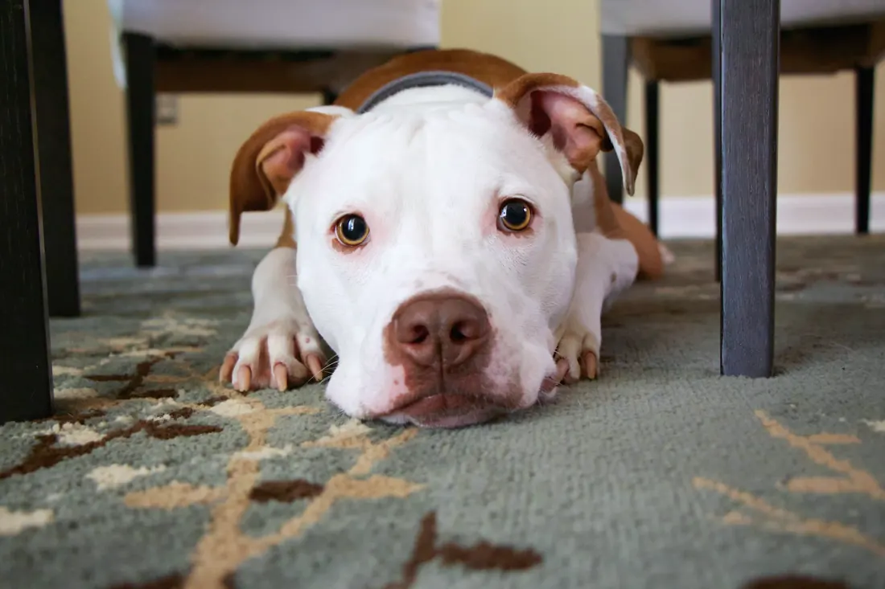
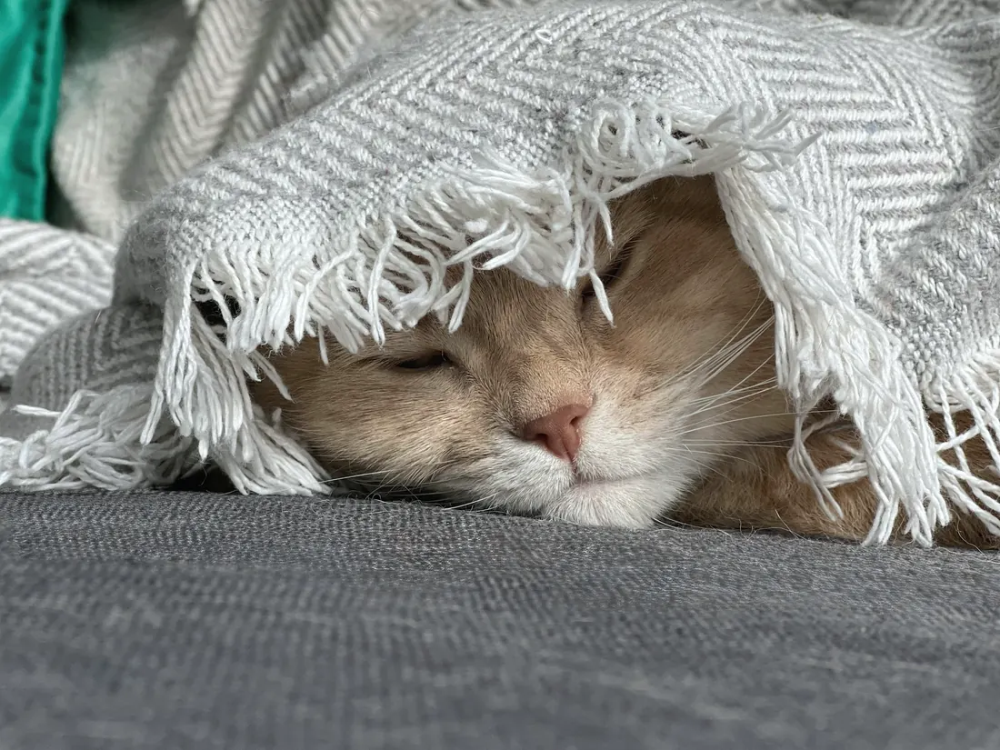
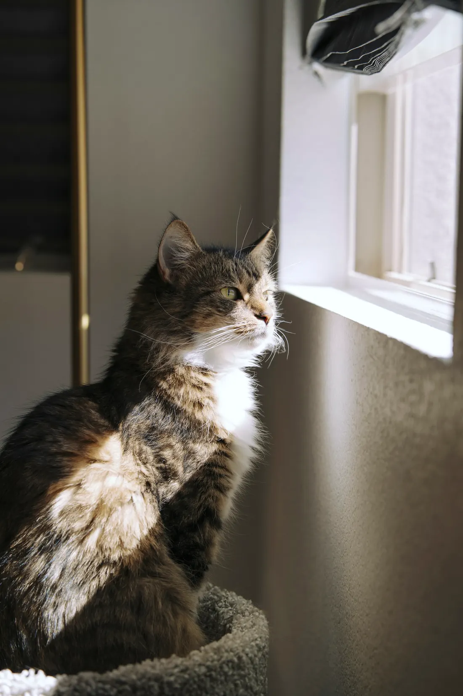

Ich behandle Ihr Tier dort, wo es sich sicher fühlt.
Mobile Notfall- und Akutversorgung für Hunde und Katzen in Mannheim, Ludwigshafen, Heidelberg und Umgebung. Ihr Tier bleibt zu Hause, und Sie sind die ganze Zeit an seiner Seite.
Termin anfragen
Zwei kurze Fragen, dann geht es zur Anfrage. Mein Team meldet sich so schnell wie möglich bei Ihnen.
Lieber anrufen?
Am Telefon klären wir am schnellsten, was Ihr Tier braucht. Schreiben können Sie mir auch per WhatsApp: [FEHLT: Nummer].
| Montag bis Freitag | 9 bis 23 Uhr |
|---|---|
| Samstag | 8 bis 12 Uhr |
| Sonntag | in Ausnahmefällen nach Absprache |
Wohin ich komme
Mein Schwerpunkt ist das Stadtgebiet Mannheim. Ich fahre auch nach Ludwigshafen, Heidelberg, Karlsruhe, Speyer, Schwetzingen, Weinheim, Worms und in die Orte dazwischen.
[FEHLT: Postleitzahlen aus der Ortsliste vom Kunden prüfen lassen]

So läuft ein Hausbesuch
-
Am Telefon
Sie schildern, was los ist. Mein Team oder ich fragen nach und machen mit Ihnen eine Uhrzeit aus. Sie erreichen uns auch per WhatsApp oder über die Terminanfrage.
-
Vor dem Besuch
Halten Sie Ihr Tier in einem ruhigen, gut beleuchteten Raum bereit. Katzen am besten schon vorher, bevor sie sich verstecken.
-
Bei Ihnen
Ich untersuche Ihr Tier in seiner vertrauten Umgebung, ohne Transportkäfig und ohne Fahrt. Sie bleiben die ganze Zeit dabei, und ich erkläre Ihnen jeden Schritt.
-
Nach dem Besuch
Die Rechnung kommt direkt per E-Mail. Sie können sie bei Ihrer Tierkrankenversicherung einreichen.
-
Wenn mehr nötig ist
Braucht Ihr Tier eine Operation oder stationäre Behandlung, vermittle ich Sie an eine geeignete Klinik in Mannheim und übernehme die Vor- und Nachsorge.
Wobei ich helfe
Akute Erkrankungen und Verletzungen behandle ich direkt bei Ihnen. Braucht Ihr Tier weitere Diagnostik oder eine Operation, organisiere ich die Überweisung an eine Tierklinik und übernehme die Vor- und Nachsorge.

-
Akutversorgung und Stabilisierung
Bei Atemnot, Vergiftung oder Kreislaufproblemen untersuche ich Ihr Tier sofort, stabilisiere es und lindere den Schmerz.
-
Durchfall und Erbrechen
Ich untersuche Ihr Tier, suche die Ursache und gebe ihm Flüssigkeit, wenn es sie braucht.
-
Schmerzbehandlung
Ich behandle akute und chronische Schmerzen mit Medikamenten aus meiner tierärztlichen Apotheke.
-
Bisswunden und Verletzungen
Ich reinige und versorge die Wunde bei Ihnen zu Hause.
-
Ohrenentzündungen
Kratzt sich Ihr Hund ständig am Ohr oder schüttelt den Kopf, sehe ich mir das in Ruhe an.
-
Augen und Bindehaut
Rote, tränende oder verklebte Augen untersuche und behandle ich vor Ort.
-
Blase und Harnwege
Muss Ihr Tier ständig oder unter Schmerzen Wasser lassen, kläre ich die Ursache und behandle die Entzündung.
-
Infektionen und Infusionen
Antibiotika und Infusionen gebe ich bei Ihnen zu Hause, wenn Ihr Tier sie braucht.
-
Lahmheit und Bewegung
Ich finde heraus, wo es weh tut, und lindere den Schmerz, auch wenn er schon länger besteht.
-
Abschied zu Hause
Wenn es Zeit ist, komme ich zu Ihnen. Ihr Tier schläft dort ein, wo es sein Leben verbracht hat.
Ich bringe die Praxis zu Ihnen nach Hause.
Rasheed Al Saeed, approbierter Tierarzt, Schwerpunkt Kleintiermedizin
Transport und fremde Gerüche bedeuten für ein krankes Tier Stress. Das verschlechtert nicht nur sein Befinden, er erschwert auch die Untersuchung. Zu Hause untersuche ich ruhiger und sehe mehr.
Meine tierärztliche Kenntnisprüfung habe ich an der Justus-Liebig-Universität Gießen abgelegt. Erfahrung habe ich in einem Internship bei AniCura in Bielefeld und in Tierarztpraxen und Kliniken in Essen gesammelt. Dort habe ich gelernt, wie viel eine sorgfältige Anamnese und eine ruhige, klare Entscheidung wert sind, wenn es eilt.
Ich behandle allein. Mein Praxisteam kümmert sich um Termine, Erreichbarkeit und Medikamente, damit ich mich ganz auf Ihr Tier konzentrieren kann.
Was auf Sie zukommt
Ich rechne nach der Gebührenordnung für Tierärzte ab. Vorab erstelle ich Ihnen einen Kostenvoranschlag.
- Hausbesuch, Untersuchung und Behandlung
- nach GOT
- Nach 18 Uhr, am Wochenende und an Feiertagen
- Zuschlag nach GOT
- Bezahlen
- bar, EC-Karte oder Rechnung
- Absagen
- bis 24 Stunden vorher ohne Gebühr
Häufige Fragen
Wie vereinbare ich einen Termin?
Rufen Sie an, schreiben Sie per WhatsApp oder nutzen Sie die Terminanfrage auf dieser Seite. Ich melde mich so schnell wie möglich und wir finden einen Termin.
Bieten Sie Notfallbehandlungen an?
Ja, innerhalb meiner Zeiten versorge ich akute Erkrankungen und Verletzungen bei Ihnen zu Hause. Eine 24-Stunden-Versorgung biete ich nicht an. In Lebensgefahr fahren Sie bitte direkt in die nächste Tierklinik.
Kommen Sie auch am Wochenende?
Ja, nach Vereinbarung am Samstag und in Ausnahmefällen am Sonntag. Am Wochenende fällt ein Zuschlag an.
Können Sie operieren?
Größere Operationen sind mobil nicht möglich, dafür braucht Ihr Tier eine Klinik. Ich vermittle Sie an eine geeignete Klinik in Mannheim und übernehme die Vor- und Nachsorge.
Wie bezahle ich, und zahlt meine Versicherung?
Sie zahlen bar, mit EC-Karte oder auf Rechnung. Die Rechnung bekommen Sie direkt nach der Behandlung per E-Mail. Viele Tierkrankenversicherungen erstatten die Behandlung, wie viel, hängt von Ihrem Tarif ab.
Welche Tiere behandeln Sie?
Vor allem Hunde und Katzen. Bei Kaninchen, Meerschweinchen und anderen Kleintieren rufen Sie mich bitte vorher an, dann besprechen wir, was möglich ist.
Kann ich einen Termin absagen?
Ja. Sagen Sie bitte bis 24 Stunden vorher ab. Bei einer späteren Absage berechne ich bis zur Hälfte der Hausbesuchsgebühr.
Im Notfall
Bei Atemnot, Vergiftung, Verletzungen, starken Schmerzen oder Kreislaufproblemen rufen Sie mich an. Ich komme so schnell wie möglich, untersuche Ihr Tier und stabilisiere es. Die wichtigsten Medikamente habe ich dabei.
Eine 24-Stunden-Versorgung biete ich nicht an. Ist das Leben Ihres Tieres in Gefahr oder erreichen Sie mich außerhalb meiner Zeiten, fahren Sie bitte direkt in die nächste Tierklinik.